✓ Живые события в реальном времени — прямо на проекторе
✓ Клик по ученику — мгновенная 360°-карточка
✓ Сценарий «оценка 2 → сигнал родителю» одной кнопкой
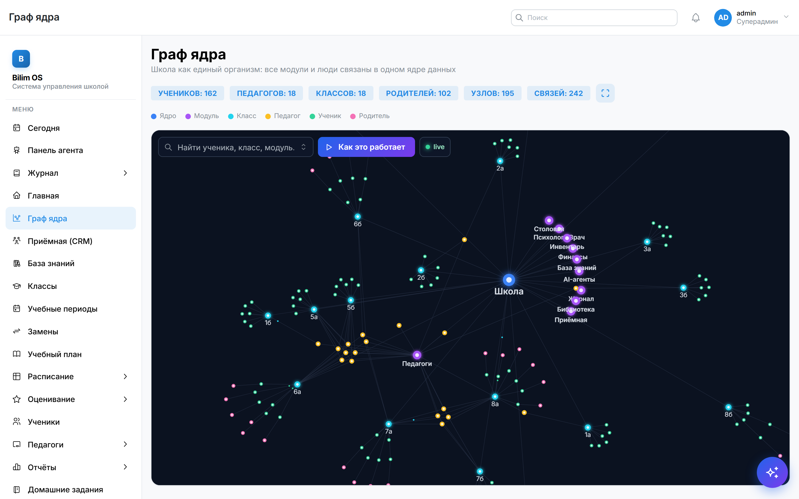
BILIM OSавто
360° по каждому ученику
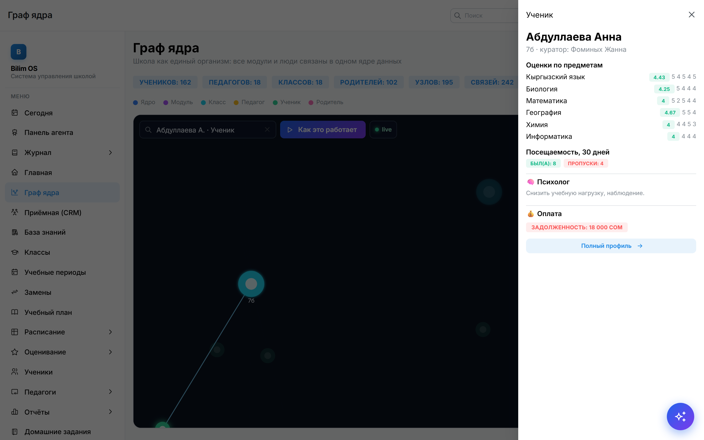
Один клик — полная картина
Оценки, посещаемость, финансы семьи, заметки специалистов — всё по ученику в одной карточке, с учётом прав доступа.
✓ История с приёмной кампании до выпуска
✓ Чувствительные данные видят только допущенные роли
✓ Поиск любого ученика за секунду
BILIM OSавто
Лента ИИ-агента УЖЕ РАБОТАЕТ
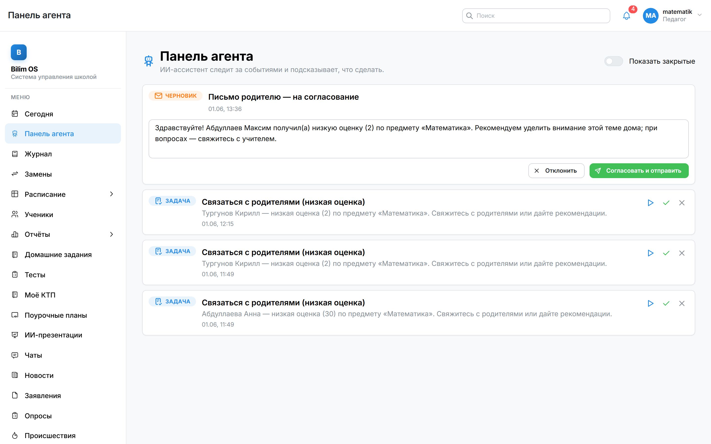
Алерт · задача · совет · черновик
ИИ-агент следит за событиями школы и сам подсказывает педагогу, что сделать прямо сейчас.
✓ Готовые задачи — ничего не нужно держать в голове
✓ Черновики писем родителям генерируются автоматически
✓ Свой инбокс агента у каждой роли
BILIM OSавто
ИИ готовит — человек подтверждает
Контроль остаётся за педагогом
Агент сам пишет черновик письма родителю по событию. Учитель только проверяет и подтверждает — ничего не уходит без его решения.
✓ Эмпатичный текст в нужном тоне за секунды
✓ Кнопка «Согласовать и отправить» — один тап
✓ Можно отклонить или отредактировать
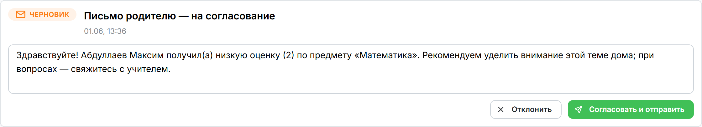
BILIM OSавто
AI-ассистент в каждом кабинете УЖЕ РАБОТАЕТ
Спросите школу о чём угодно
Плавающий ассистент отвечает на вопросы по реальным данным: успеваемость, финансы, посещаемость, приёмная кампания.
✓ Понимает роль: родитель видит только своих детей
✓ Директору — сводки, учителю — классы, бухгалтеру — долги
✓ Отвечает и по базе знаний школы: расписание звонков, правила
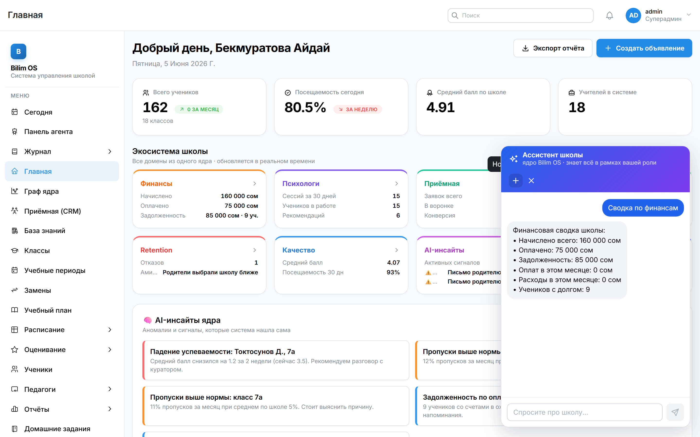
BILIM OSавто
AI-инсайты: ядро само находит проблемы УЖЕ РАБОТАЕТ
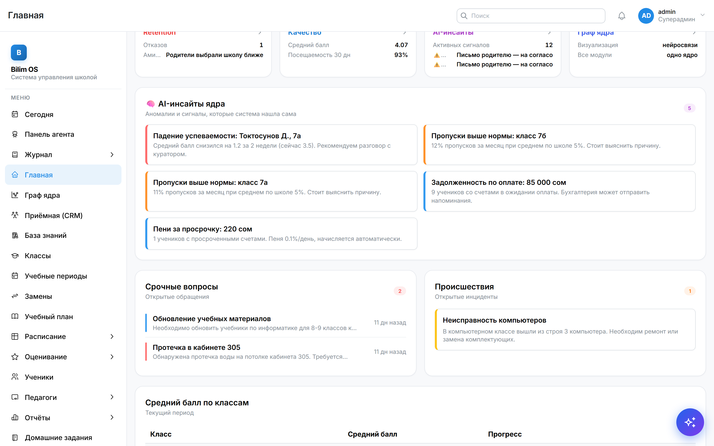
Аномалии — до того, как станут ЧП
⚠ Падение успеваемости ученика за последние 2 недели
⚠ Класс-выброс по пропускам на фоне школы
⚠ Растущая задолженность по оплате
⚠ Застрявшие заявки в приёмной кампании
Каждое утро — свежий список того, что требует внимания директора.
BILIM OSавто
Уведомления приходят в Telegram
Без захода в систему
Родитель узнаёт об оценке или пропуске сразу — прямо в мессенджере, которым пользуется каждый день.
✓ Меньше тревоги и звонков в школу
✓ Канал-агностик: Telegram сегодня, SMS/почта — на подходе
✓ Доставка в ту же секунду после события
Bilim OS
бот школы
📌 Математика — у Максима оценка «2» за сегодня. Учителю поставлена задача связаться с вами.
13:36 ✓✓
BILIM OSавто
Освободите время для главного
70%
ВРЕМЕНИ — НА РУТИНУ
Долой бумажную работу
По разным оценкам, до 70% рабочего времени директора и завуча уходит на рутинное администрирование.
Цель Bilim OS — вернуть это время школе. ИИ берёт на себя рутину, чтобы вы сосредоточились на живом общении с коллективом и учениками.
BILIM OSавто
02
Сценарии в реальной жизни
Как Bilim OS решает ежедневные критические задачи школы в автоматическом режиме.
BILIM OSавто
Автоматический контроль прогулов
Раньше — ручной процесс
Ученик пропускает первый урок. Классный руководитель замечает это в середине дня. Родитель узнаёт вечером — или вообще не узнаёт.
Сейчас — Bilim OS
8:05 Ученик не отмечен на первом уроке.
8:10 Родителю — авто-уведомление в Telegram: «Ваш ребёнок отсутствует».
8:10 Классному руководителю — сигнал в инбокс.
BILIM OSавто
Журнал мирового уровня НОВОЕ
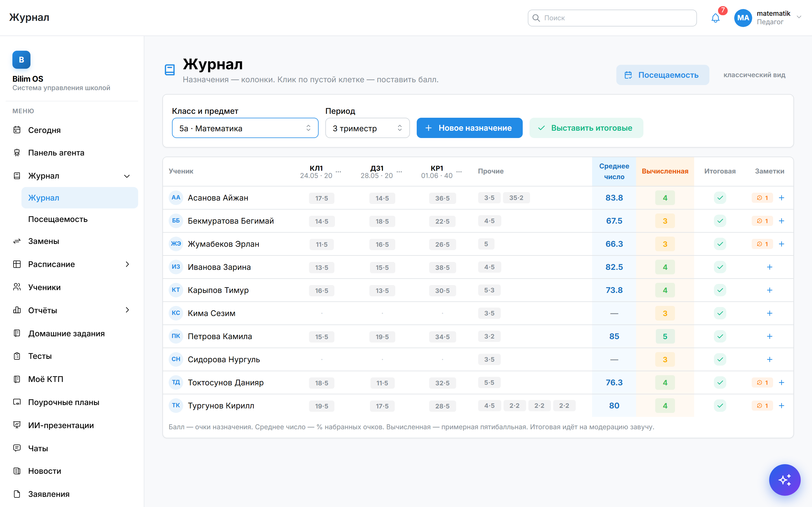
Как EduPage — только своё
✓ Колонки-назначения: контрольные, проекты, домашки — с баллами
✓ Проценты сами превращаются в оценку по шкале школы
✓ Итоговая — только через утверждение завуча
✓ Заметки-эмодзи о поведении: 12 типов, видят родители
BILIM OSавто
Посещаемость — одним касанием
Отметить класс за 30 секунд
Карточки учеников с фото: тап — присутствует, ещё тап — опоздал, ещё — отсутствует. Telegram родителю уходит сам.
✓ Работает с телефона учителя
✓ Пропуск без причины сразу виден куратору
✓ Статистика по классу копится автоматически
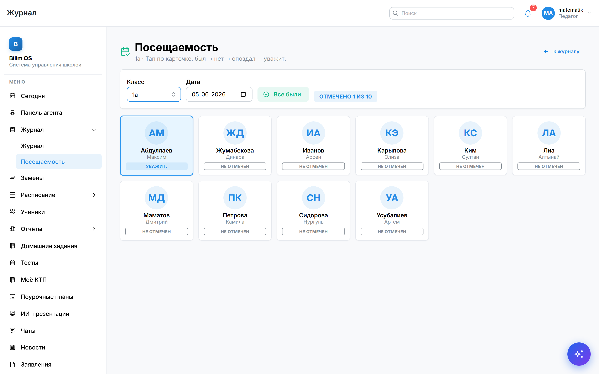
BILIM OSавто
Двухуровневая модерация оценок УЖЕ РАБОТАЕТ
Защита от ошибок и накруток
Оценки проходят проверку завучем перед публикацией — родитель видит только подтверждённые баллы.
✓ Очередь оценок на утверждение
✓ Журнал аудита: кто, когда и что изменил
✓ Полная прозрачность для администрации
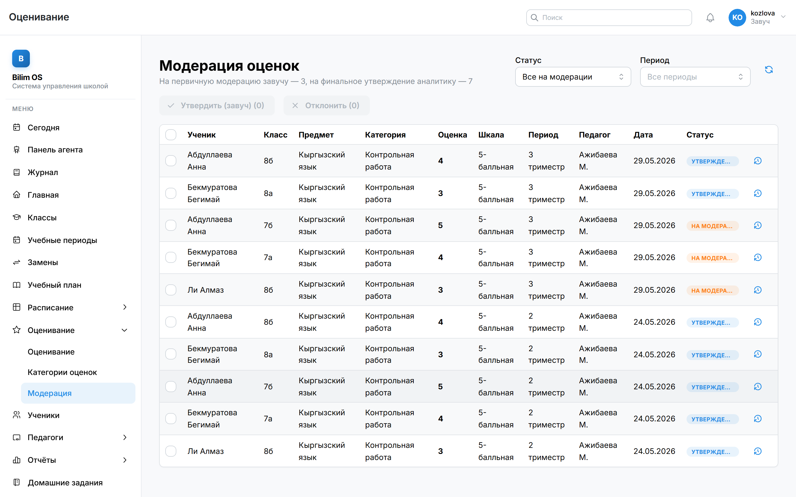
BILIM OSавто
ИИ-презентации урока УЖЕ РАБОТАЕТ
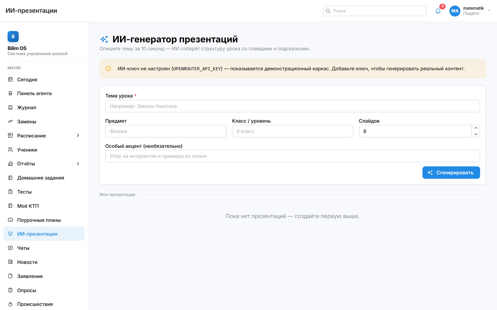
Презентация за минуты
Учитель задаёт тему — ИИ собирает структурированную презентацию урока.
✓ Готово к выгрузке в PowerPoint
✓ Экономит часы подготовки к урокам
✓ Скоро: видео-тизер и интерактивный сценарий ПИЛОТ 2026
BILIM OSавто
CRM приёмной кампании НОВОЕ
От заявки до зачисления
Канбан на 7 этапов: заявка → контакт → встреча → тест → договор → оплата → зачислен. Ни один лид не теряется.
✓ При зачислении ученик и график оплат создаются сами
✓ Данные собеседования и теста переходят в профиль
✓ Застрявшие заявки подсвечивает AI-инсайт
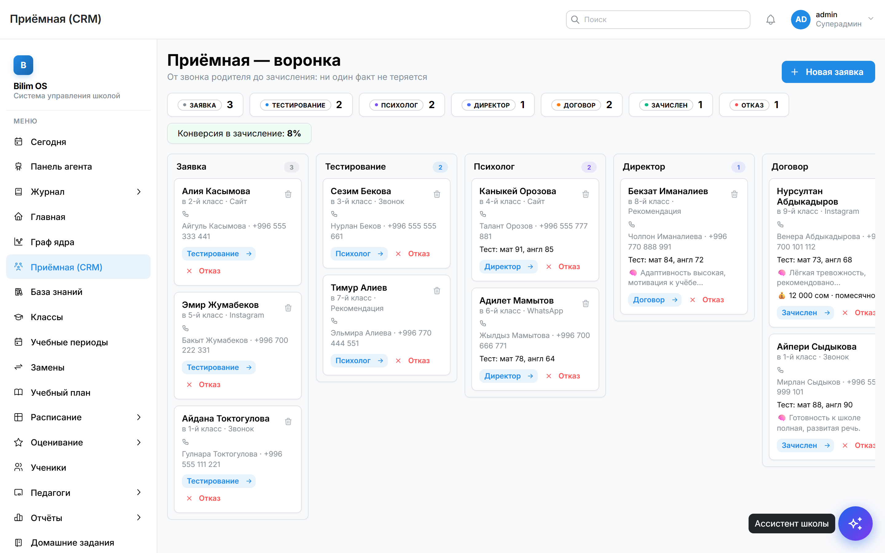
BILIM OSавто
Финансы школы под контролем НОВОЕ
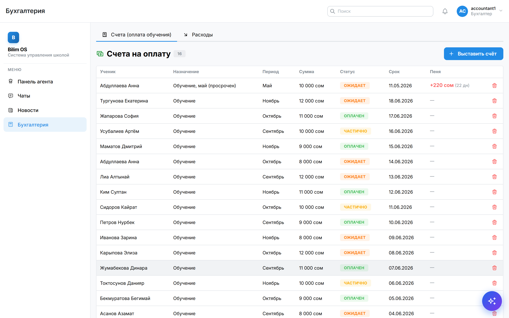
Счета, оплаты, пени — автоматом
✓ Графики оплат: помесячно, поквартально, за год
✓ Пени за просрочку считаются сами — 0,1% в день
✓ Должники — в сводке директора и у ассистента
✓ Бухгалтер видит финансы, но не лезет в психологию — и наоборот
BILIM OSавто
База знаний школы
Школа, которая помнит всё
Устав, расписание звонков, правила приёма, регламенты — загружены один раз и доступны всем через AI-ассистента.
✓ Родитель спрашивает «как проходит приём?» — ассистент отвечает
✓ Новый сотрудник не дёргает завуча по мелочам
✓ Единый источник правды для всей школы
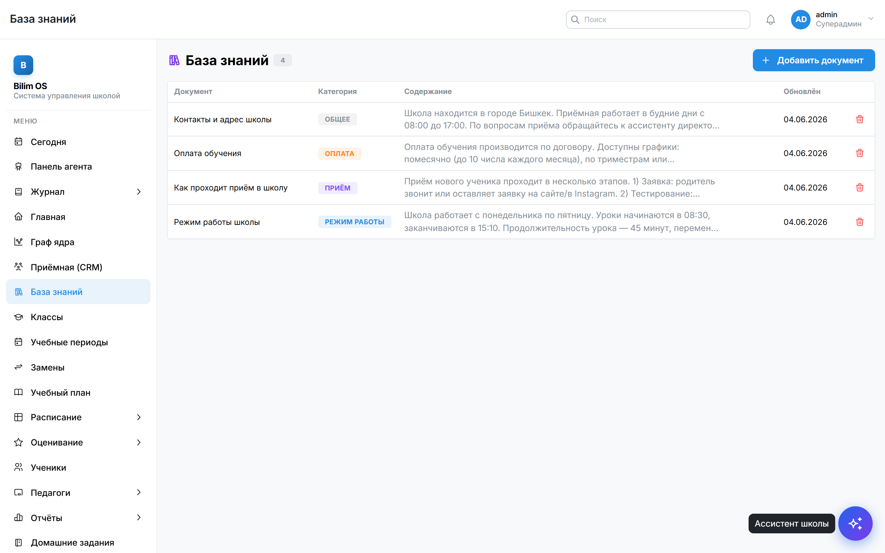
BILIM OSавто
Видно проблему раньше, чем она станет ЧП
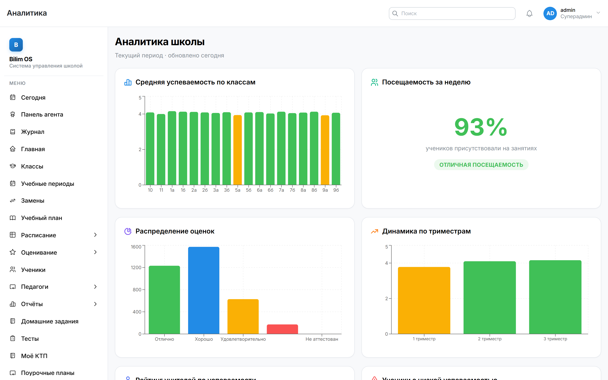
Прогнозирование успеваемости
Живые графики успеваемости и посещаемости по классам и предметам — в реальном времени.
⚠ Сигнал при спаде успеваемости
✎ Рекомендации по коррекции пробелов ПИЛОТ 2026
✓ Готовые отчёты для директора
BILIM OSавто
16 ролей — у каждого свой кабинет
Вся школа — не только классы
Помимо директора, завуча, учителей, родителей и учеников — свои кабинеты у каждой службы школы:
БухгалтерПсихологВрачHRБиблиотекарьПоварЗавхоз
Каждый видит только свой контур: повар не видит оценки, учитель — зарплаты.
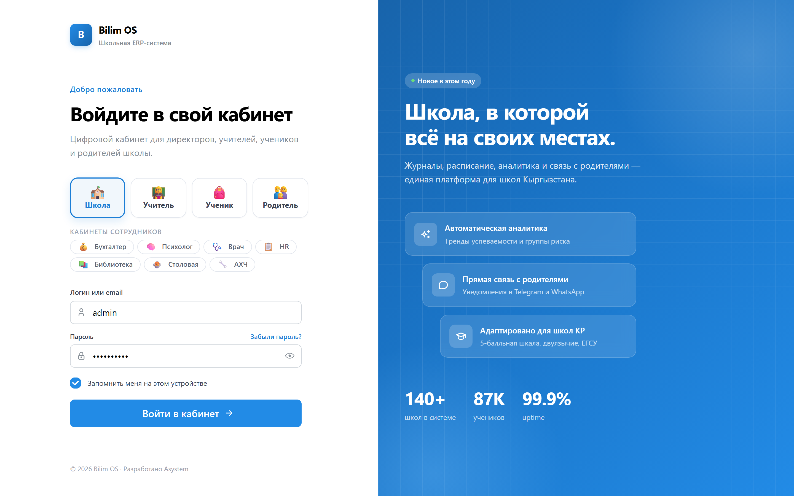
BILIM OSавто
Что уже работает, а что — в пилоте
Мы честно разделяем рабочий продукт и дорожную карту — без обещаний «на бумаге».
✓ Доступно сейчас
ИИ-агент «событие→действие»
AI-ассистент по ролям
Нейро-граф + AI-инсайты
Журнал с назначениями
Модерация оценок
CRM приёмной + финансы и пени
16 ролей и кабинетов
ИИ-презентации урока
База знаний школы
Telegram · мобильный дневник
Дорожная карта · пилот 2026
Проверка ДЗ и тетрадей по фото (OCR)
Радар раннего выявления буллинга
Персональный ИИ-репетитор ученика
Интеграция с е-Кундолюк
AKU — робот-компаньон
BILIM OSавто
03
Оцифрованные результаты
Статистика и реальное влияние Bilim OS на показатели образовательного процесса.
BILIM OSавто
Скорость реакции на инцидент
Традиционно
120 мин
Bilim OS (ИИ)
2 мин
Так это работает на одном инциденте: уведомление уходит сразу, а не часы спустя или в конце четверти.
BILIM OSавто
Рост качества знаний
BILIM OSавто
Школа в смартфоне
Родитель и ученик видят дневник, домашние задания и расписание прямо в телефоне — без звонков в школу.
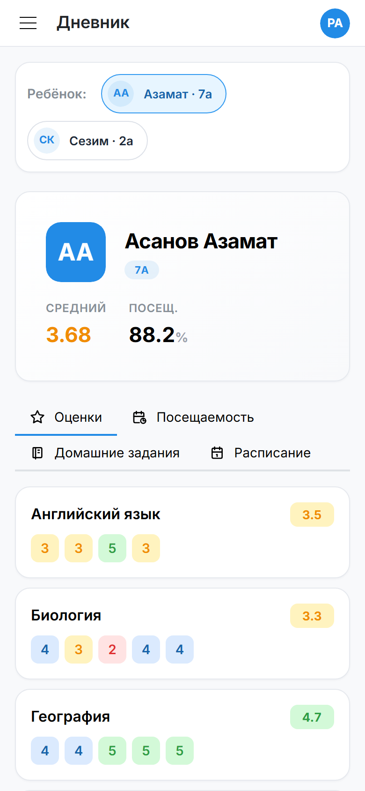
Дневник · родитель
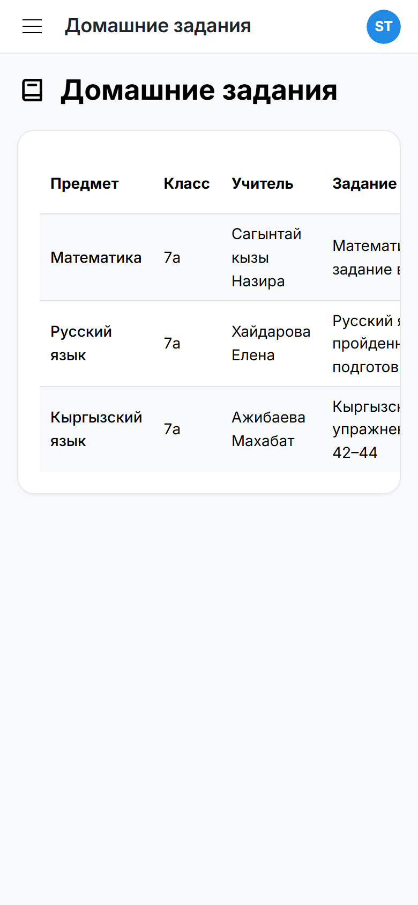
Домашние задания · ученик
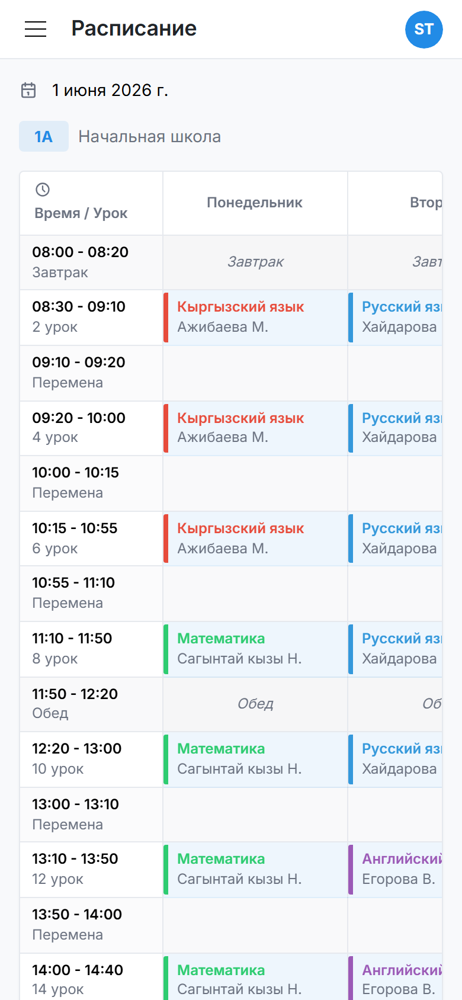
Расписание · ученик
BILIM OSавто
04
Простое внедрение
Как быстро и безболезненно подключить вашу школу к ИИ-платформе.
BILIM OSавто
4 простых шага к цифровизации
Шаг 1
Импорт данных
Переносим списки учеников и учителей в систему.
Шаг 2
Обучение команды
Быстрый курс по журналу, расписанию и ИИ-инструментам.
Шаг 3
Запуск сценариев
Активация модулей посещаемости и авто-оповещений.
Шаг 4
Полная свобода
Автоматическая реакция системы на любые инциденты.
BILIM OSавто
Данные под защитой
16 ролей доступа
Жёсткое разграничение: каждый видит только своё. Ученик и родитель — только свои оценки, психолог — только свой контур.
Журнал аудита
Кто, когда и что изменил — фиксируется. Корректность проверена автотестами.
Приватная обработка ИИ
Данные детей обрабатываются по принципам COPPA/GDPR. Облако и регулярные бэкапы.
BILIM OSавто
Сравнение систем управления
Функция
Обычные системы
Bilim OS (ИИ)
Контроль посещаемости
Заполнение журнала вручную
✓ Один тап — родитель уже знает
Реакция на двойку
Замечают через недели
✓ ИИ-агент в ту же секунду
Вопрос о школе
Звонок секретарю
✓ AI-ассистент отвечает сразу
Приёмная кампания
Тетрадь и чьи-то записки
✓ CRM: ни один лид не теряется
Оплата и долги
Сверка вручную в Excel
✓ Счета, пени и сводка — сами
BILIM OSавто
Технологическая философия
“
Искусственный интеллект не заменяет педагога — он снимает с него рутину. Bilim OS берёт на себя бумаги и отчёты, чтобы учитель освободил время для главного — живого, индивидуального общения с каждым учеником.
— Философия Bilim OS
BILIM OSавто
Измеримый результат для школы
Снижение затрат
Оптимизация рабочего времени за счёт сокращения ручных процессов.
Рост качества знаний
Оперативный ИИ-контроль пробелов помогает поднять успеваемость.
Лояльность родителей
Спокойствие за счёт мгновенных и понятных авто-оповещений.
BILIM OSавто
СОБЫТИЕ → ДЕЙСТВИЕ
Станьте пионером ИИ в школах Кыргызстана
Приглашаем прогрессивные школы в пилот Bilim OS — и зафиксируйте условия раннего партнёра.